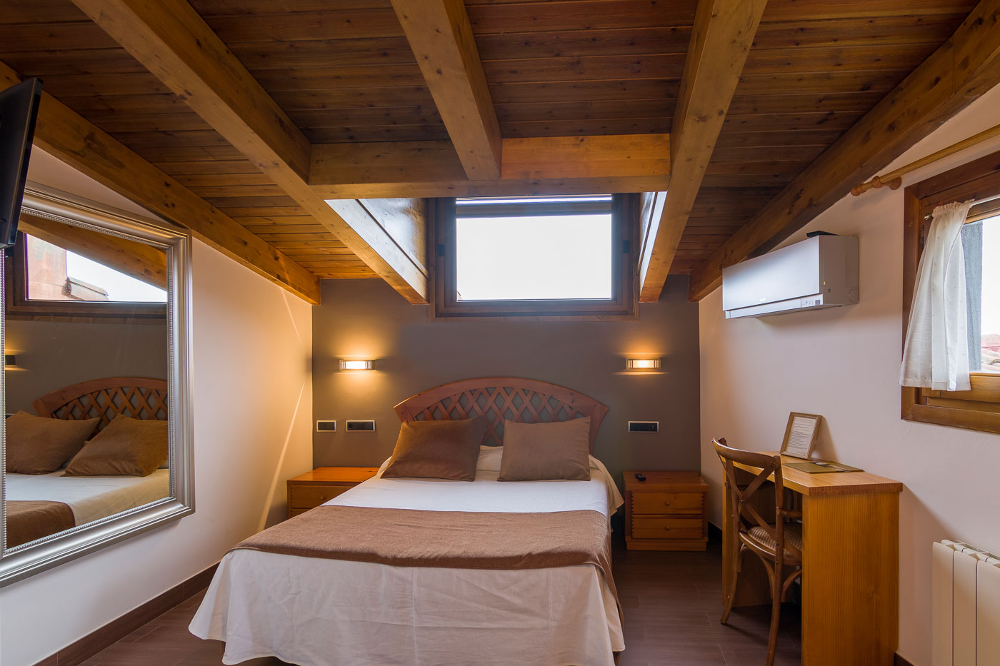
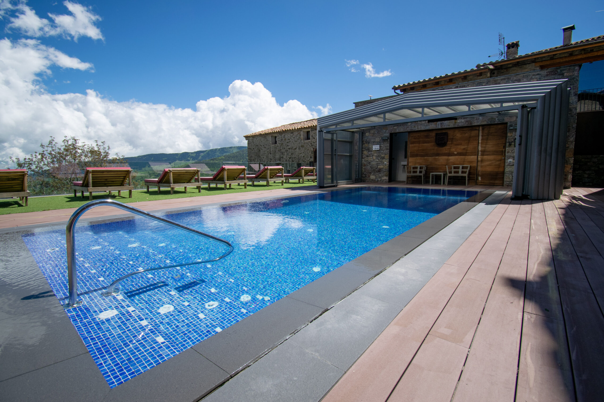
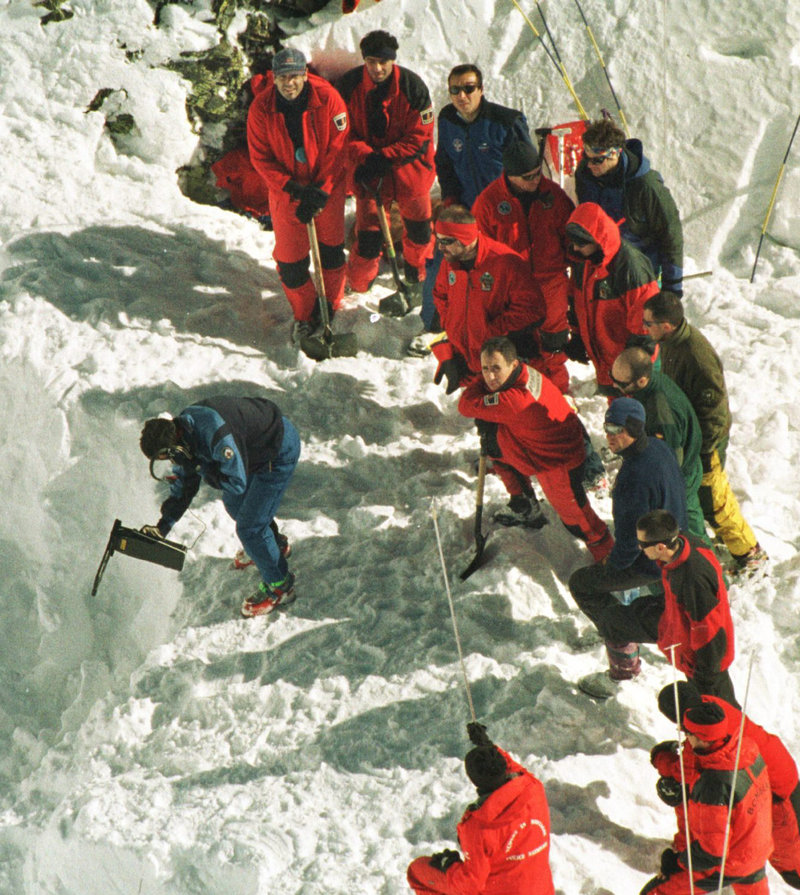
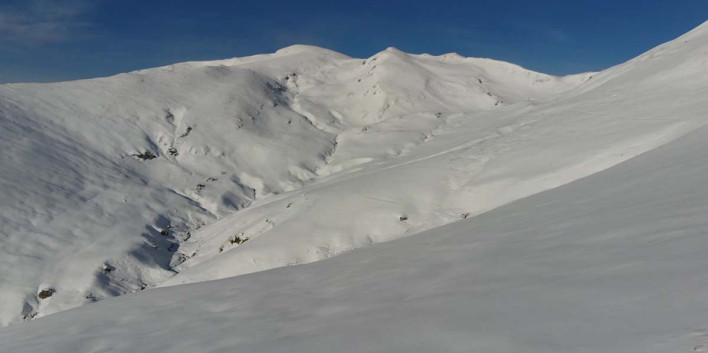

Tregurà de Dalt és un nucli de població del municipi ripollès. Està a prop de Setcases, te'n recordes? Està a propet dels voltants del Balandrau, per tant podrem gaudir uns dies dels paisatges de la novela ❄️
Del 30 de Gener al 2 de Febrer, ens allotjament a Fondà Rigà, una fonda ideal i moderna regentada per una família del poble. El millor de tot?
Dona-li una ullada 👀
Doncs amb la Teisa como no! Sortim pel matí direcció a Camprodon i des d'allà transport a demanda (un altre bus) fins Tregurà.




Tenim a cinc minutets la placa en record a la tragèdia i vistes a la vall!
Podem tornar a Setcases només per tornar a comprar a Ca la Nuri 🤭
Pedre'ns al mateix lloc que ells perquè ens ha agafat el torb?
Què me'n dius, vols venir a investigar amb mi?🥺
Recorda: els reis són màgics, així que només ens ho pasarem bé i la meva nena podrà descansar per fi d'aquest PIR. T'estimo!